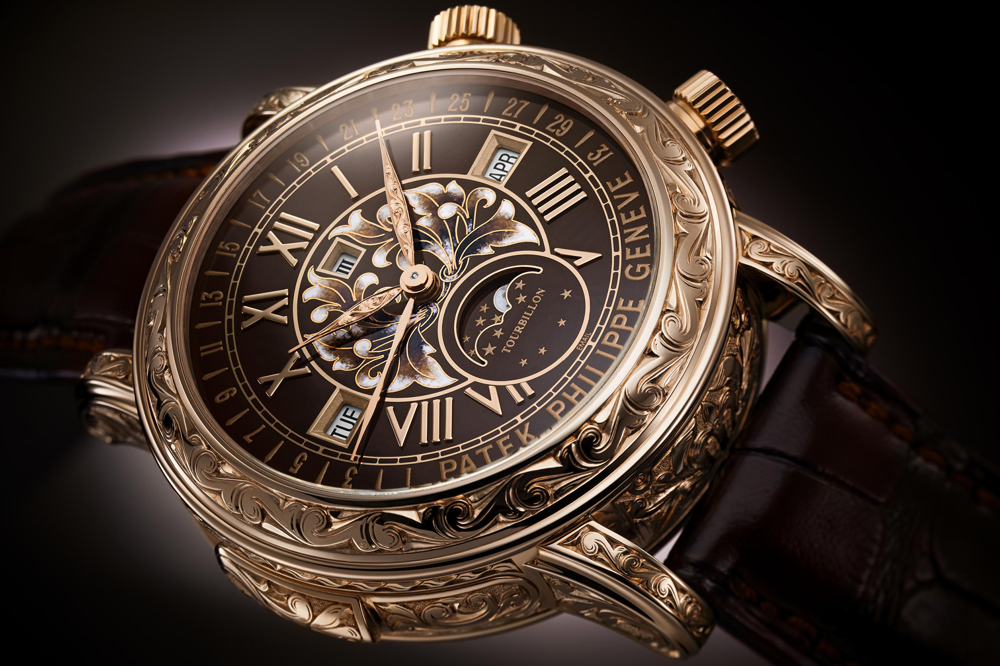
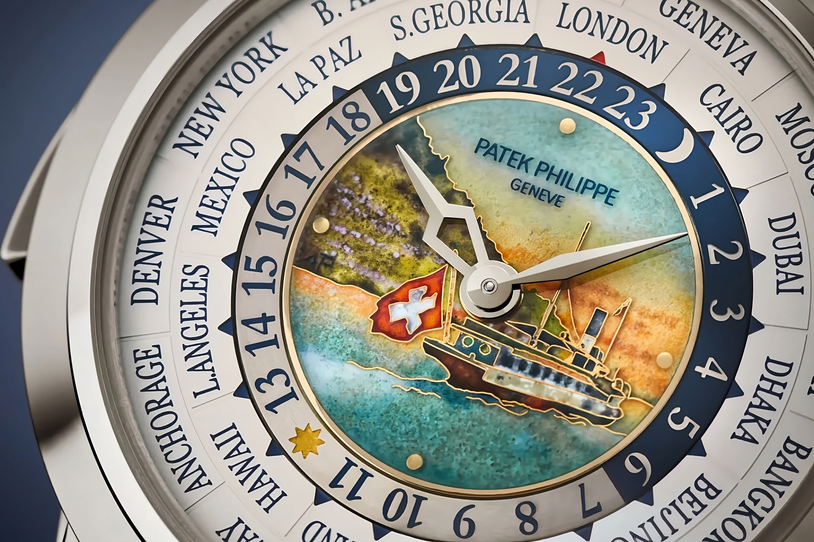
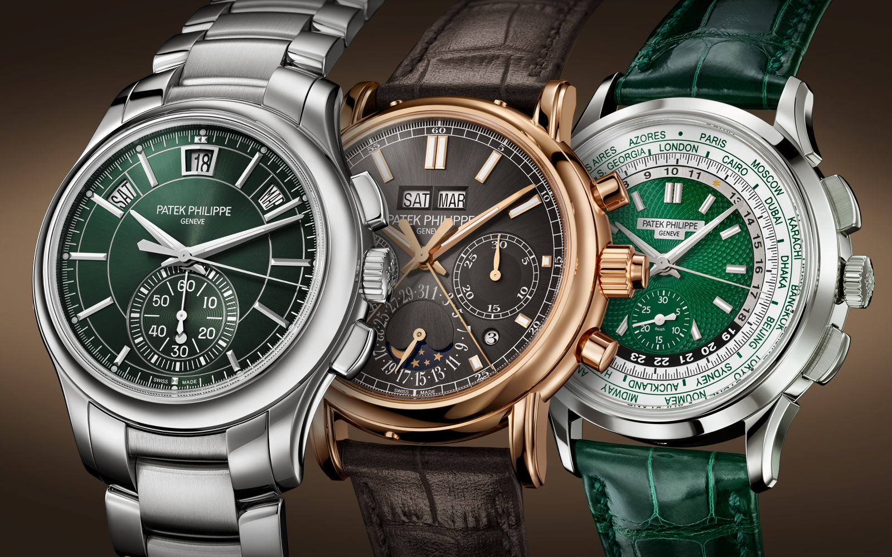
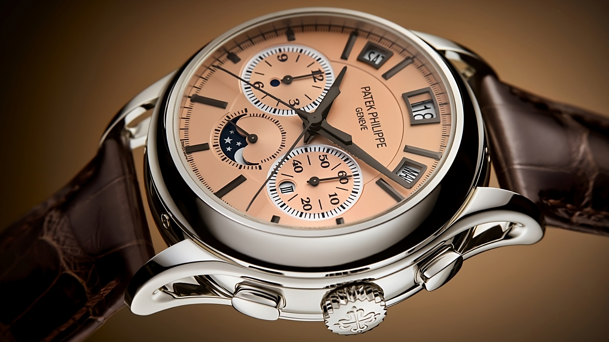

Patek Philippe
You never actually own a Patek Philippe. You merely look after it for the next generation.
News ⌂
The NEW Sun and Moon Collection Gallery

Patek Philippe gives the Reference 6002 Sky Moon Tourbillon a new look by combining the warm glow of rose gold with a Grand Feu brown enamel decoration. The double-faced case, crowns, slide piece, hour/minute hands and fold-over clasp are entirely hand-engraved with volutes and arabesques. The front dial combines Grand Feu champlevé and cloisonné enameling. This exceptional timepiece, the second most complicated Patek Philippe wristwatch (12 complications), is delivered with a pair of matching cufflinks.

World Time Minute Repeater
The very first edition of this timepiece was introduced to the world at the 2017 Patek Philippe Grand Exhibition in New York (5531R-010).

Three new chronographs with additional complications
The Manufacture is unveiling three variations of the 5204, 5905 and 5930 models that illustrate its expertise in the field of complications, particularly in the measurement of short times.

Patek Philippe releases six special editions at Watch Art Grand Exhibition Tokyo
The manufacture debuts a new quadruple complication, a new world timer with a unique date display, and other Tokyo-exclusive editions for the Japanese market.

Patek Philippe unveils six special editions on the occasion of the “Watch Art” Tokyo 2023 exhibition
Patek Philippe has inaugurated the grand exhibition “Watch Art” Tokyo 2023. The renowned independent family-owned watch manufacture has chosen Japan and Tokyo as the destination for the sixth edition of the exhibition, which follows Dubai in 2012, Munich in 2013, London in 2015, New York in 2017 and Singapore in 2019.